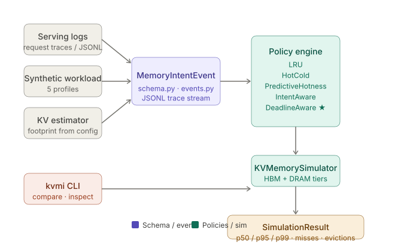

LRU evicts 12.4% of decode-critical blocks under pressure. DeadlineAware evicts 0% in the stronger calibrated framing and sharply reduces miss rates in the checked-in sweep.
KV Deadline Scheduler is an open-source research platform for semantic memory scheduling across LLM runtimes, Linux VM, I/O, and kernel integration paths.

| Policy | deadline_pressure dc_miss_rate |
|---|---|
| LRU | 0.04494 |
| IntentAware | 0.00281 |
| DeadlineAware | 0.00281 |
See the generic memory-intent RFC and loadable Linux prototypes under kernel_patches/.
pip install -e .[dev] kvmi demo --profile deadline_pressure kvmi compare --trace imported_trace.jsonl --hbm-mb 4096 --dram-mb 65536
Draft paper: KV Deadline Scheduler: Intent-Aware Memory Management for Long-Context LLM Inference. arXiv link placeholder.
If you are building LLM inference infrastructure and want to integrate deadline-aware KV scheduling, open an issue or email.